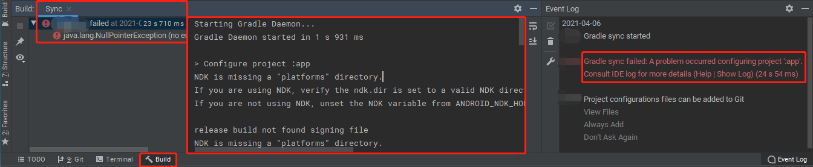
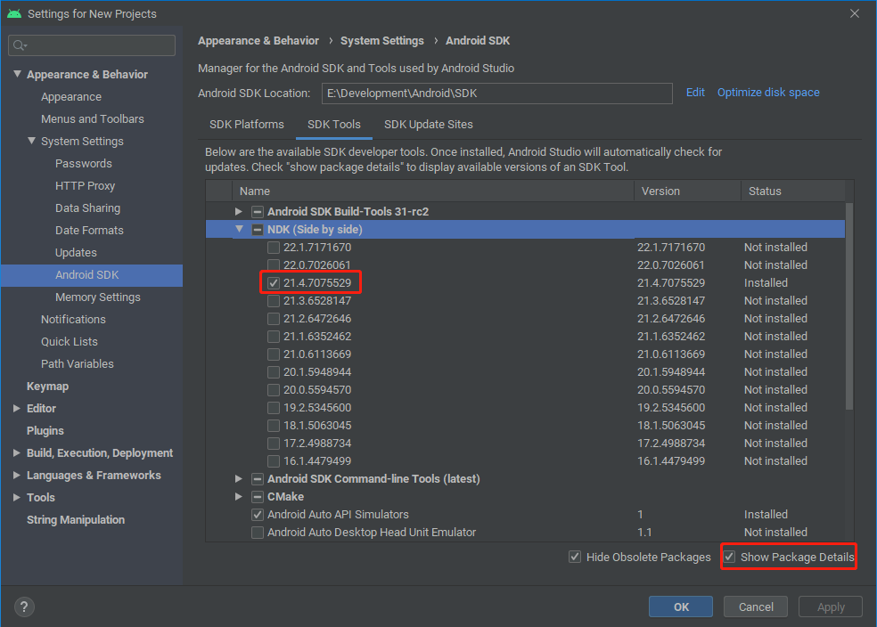

在使用Android Studio的过程中，不免会遇到些莫名其妙的问题，这些问题的产生，可能是由于Android Studio本身的版本兼容性，也可能是使用的Gradle构建工具的兼容性，或者国内网络环境的因素等。本文收集了一些使用Android Studio过程中遇到的问题及相应的解决办法，所涉及的环境为Windows 10 1909 x64和Android Studio 4.1.3 x64。
解决问题的一般方法
由于遇到的问题多种多样，有些未必能搜索到现存的解决办法，因此，最重要的还是能自己分析问题并找到解决方案，一般来讲，Android Studio的Event Log窗口和Build Output窗口都已经提示了一些失败的线索，根据这些信息来分析，往往能一步步找到解决办法。如下图：

通过中间窗口上面显示的日志，及下拉后看到的如下日志：
1 | Caused by: java.lang.NullPointerException |
就能判断是NDK相关的问题，此时首先应确认相应的路径下NDK有没有安装，若没有安装，需要通过File->Settings->System Settings->Android SDK设置好Android SDK Location并安装好NDK。若在安装后NDK后重新执行Sync（File->Sync Project with Gradle files），仍提示有错误，则可进一步根据提示将错误关键信息叠加Android Studio版本搜索或参考Gradle及Android Studio的文档。此例中，搜索关键词可以是“NDK is missing a “platforms” directory Android Studio 4.1.3”。
下面是各个具体问题的描述和解决办法。
构建时提示“NDK is missing a “platforms” directory”
问题原因
一些新版本的NDK下面已经没有了platforms目录，而项目使用的Gradle插件版本（顶层build.gradle文件中dependencies块指定的classpath 'com.android.tools.build:gradle:X.Y.Z'）可能并不能处理此情况。
解决办法
首先确定使用哪一个Gradle插件版本，一般选择相应Android Studio版本对应的最新Gradle插件版本，因此在顶层的build.gradle中，将dependencies块中指定的gradle配置变更如下：
classpath 'com.android.tools.build:gradle:4.1.3'
此后，根据Android Studio提示安装新的Gradle版本后，重新Sync项目，仍会有相同的提示，可见新版本的Gradle插件也同样存在问题。由于某些旧的NDK版本存在platforms目录，因此规避此问题的办法，是卸载较新版本的NDK，安装回旧版本的NDK，通过File->Settings->System Settings->Android SDK，选中下图标记的复选框，可以切换所安装软件的版本，若已知现存可用的版本，直接选中取消其它安装即可，否则只需挨个尝试，并查看安装完成后相应的ndk目录下有没有platforms文件夹。

如上图安装了适当版本的NDK后，接下来是配置使用此NDK版本，尽管按照Android Gradle 插件版本说明，官方建议在模块的build.gradle中以ndkPath来指定本地NDK路径，但由于模块的build.gradle通常会提交到版本库，而不同开发者的本地NDK路径可能有所不同，因此，使用不提交到版本库的local.properties仍旧是一种不错的选择。
方式一，在模块的build.gradle（通常是app/build.gradle）中包含如下行：
1 | android { |
方式二，在顶层目录的local.properties文件中增加如下行：
1 | ndk.dir=E\:\\Development\\Android\\SDK\\ndk\\21.4.7075529 |
构建时提示“你的主机中的软件中止了一个已建立的连接”
问题描述
执行Build菜单里的Build或Clean等命令时，Build Output窗口直接提示“你的主机中的软件中止了一个已建立的连接”并失败。
问题原因
暂未深究，但此问题与Windows移动热点有关，估计当时的路由表配置有影响。
解决办法
在启动Android Studio时不要开移动热点，启动后再开。如果启动Android Studio时正打开着移动热点，则可以先关闭再打开一次移动热点，此时Android Studio无需重启。执行两种操作的任意一种后，Android Studio和移动热点功能都可以同时使用。
构建时提示“Could not install Gradle distribution from ‘xxx’”
问题原因
此问题主要出现在初次下载某个Gradle版本时。xxx是相应的下载链接，最后一部分是相应的文件名，如下载链接为https://services.gradle.org/distributions/gradle-6.5-all.zip，相应的文件为gradle-6.5-all.zip。Android Studio自动下载此文件可能较慢，在一定时间内下载不了数据就自动中止了，然后提示错误。但是点击相应的链接却可以用下载软件下载。
解决办法
方法一、关闭Android Studio，在%USERPROFILE%\.gradle\wrapper\dists（通常是C:\Users\USERNAME\.gradle\wrapper\dists）下搜索相应的文件名，如gradle-6.5-all.zip，会看到一个目录下包含有gradle-6.5-all.zip.part，进入此目录，将gradle-6.5-all.zip.part删除，并把下载软件下载到的gradle-6.5-all.zip复制到这个目录，新建一个名为gradle-6.5-all.zip.ok的空文件后重新打开Android Studio即可。
方法二、若有一个快速的代理服务器可用，也可以先编辑%USERPROFILE%\.gradle\gradle.properties文件，填入代理服务器地址后再打开Android Studio，此时可能很快就下载完成了。代理服务器配置示例：
1 | systemProp.http.proxyHost=localhost |
首次打开某项目时状态栏一直提示“Gradle sync started, X process running…”
问题原因
当首次打开一个项目时，Android Studio将解析各个build.gradle文件，下载依赖的库文件，由于默认情况下都是从jcenter和google网站下载的，在国内下载可能相当慢，点击状态栏的“X process running”可以看到具体的任务是怎样的。
解决办法
方法一、编辑项目顶层的build.gradle，将下列内容加入到buildscript块的repositories块里，替换原来的google()及jcenter()行：
1 | maven { url 'https://maven.aliyun.com/repository/gradle-plugin' } |
将下列内容加入allprojects块的repositories块里，替换原来的google()及jcenter()行后重新打开Android Studio：
1 | maven { url 'https://maven.aliyun.com/repository/google' } |
方法二、若想对所有项目生效，将下列内容加到%USERPROFILE%\.gradle\init.gradle文件中，之后就能从Build Output窗口中看到使用了什么仓库，被替换成了什么URL：
1 | allprojects { |
说明：
- buildscript块里定义了gradle脚本执行所需依赖，allprojects块里定义了项目生成所需依赖。
- Gradle有别名的概念，可以在将Maven存储库添加到构建文件时使用它们。其中，mavenCentral()别名表示从Central Maven 2 repository获取依赖项，jcenter()别名表示从Bintray’s JCenter Maven repository获取依赖项，mavenLocal()别名表示从本地Maven存储库获取依赖项。本地仓库的位置确定，可以由环境变量或配置文件确定，具体参考Gradle文档的RepositoryHandler。仓库指向的地址在不同版本的Gradle中可能会有变化，这可以通过
init.gradle中的打印观察到，如果有变化，可以同步修改init.gradle文件。